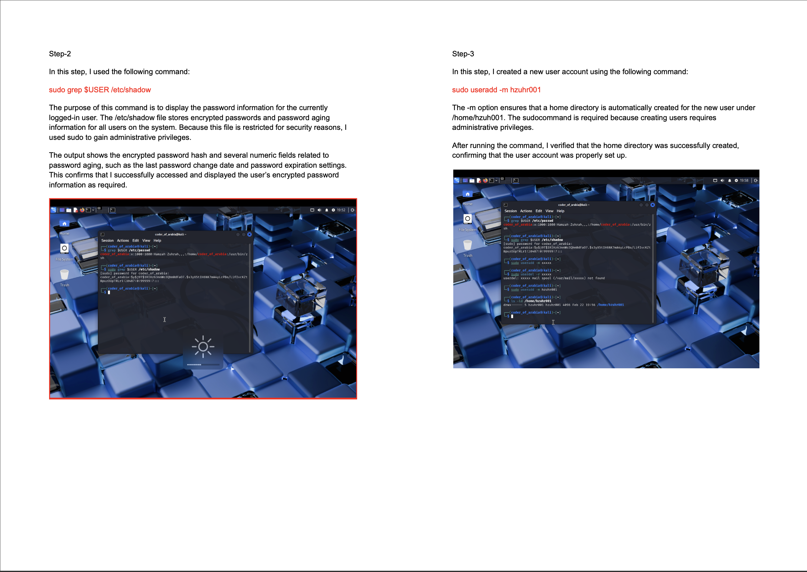
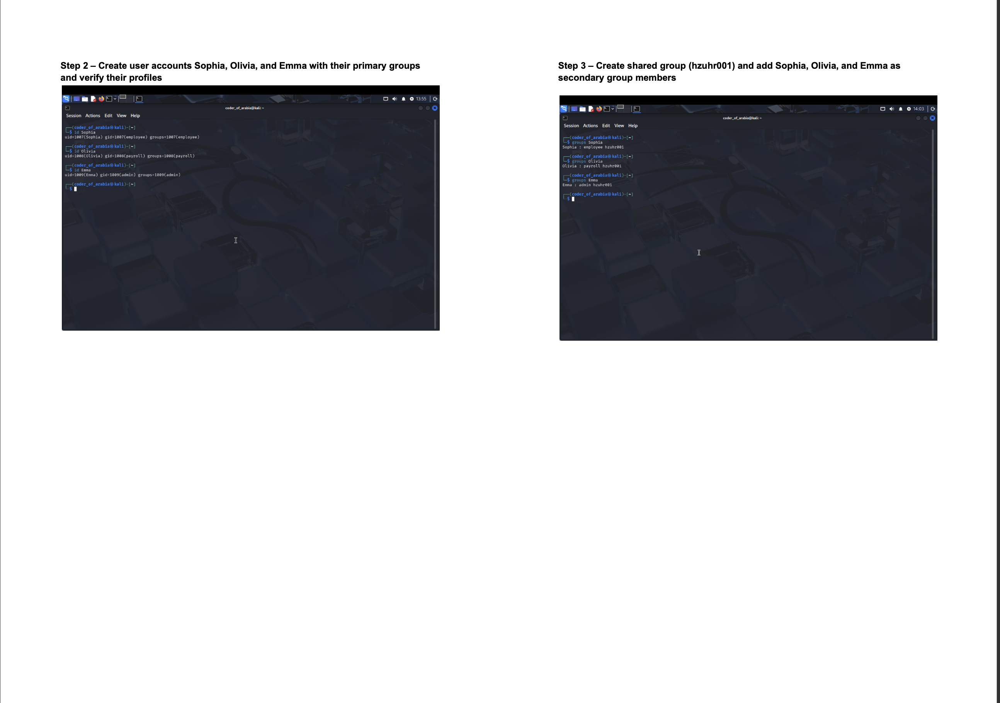
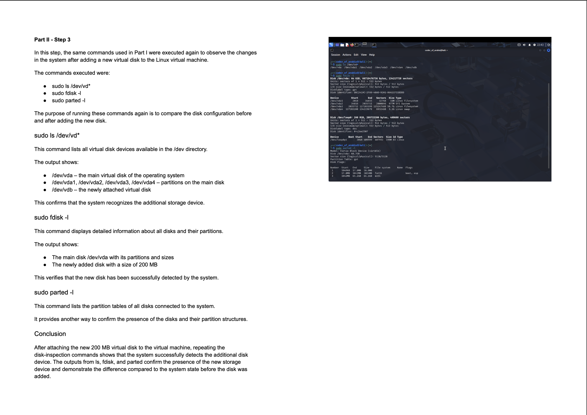

About Me
I am a cybersecurity student focused on building real technical skills in Linux, networking, system security, and cybersecurity fundamentals. My portfolio highlights coursework, hands-on labs, and practical projects that demonstrate my ability to work with command-line tools, user and permission management, and system configuration in lab environments.
Skills
Projects
Secure File Transfer System
In ProgressDeveloping a project focused on secure file transmission, confidentiality, and integrity. This project is helping me strengthen my understanding of secure communication workflows, authentication, and safe file handling.
- Designing a secure file transfer workflow
- Exploring authentication and access control concepts
- Applying security-focused thinking to file handling and data protection
- Using GitHub for version control and project development
Kali Linux Security and Administration Labs
Completed hands-on Linux assignments focused on practical system administration, command-line usage, user account management, password-related tasks, file permissions, and automation.
Networking and Infrastructure Virtual Labs
Completed labs covering networking architecture, protocols, IP addressing, routing, topologies, packet behavior, and foundational network security concepts.
Hands-On Labs
Networking and Infrastructure Labs
- Configured networking settings on a Windows device in a live virtual machine environment
- Studied networking topologies and architecture
- Worked with network protocols and router-based communication
- Practiced IP addressing and physical star topology design
- Examined packet contents and network reference models and standards
Network Security Labs
- Explored foundational network security concepts
- Analyzed general network attacks in lab environments
- Applied network hardening techniques to improve system security
Kali Linux Assignments
- Working with Command Line
- Working with vi Editor
- Group and User Management
- Password Cracking
- File Permissions
- Storage Management
- Shell Script
- Task Automation
- Networking Basics
- Basic Network Configuration
Technical Evidence
Kali Linux & Command Line Usage
- Used commands such as
grep,ls,cd, andpwdto navigate and inspect Linux systems - Managed users with commands such as
useraddandpasswd - Modified permissions using
chmodand verified results through terminal output - Worked with disk and partition-related commands in lab environments
Security Concepts Applied
- Practiced account and permission management in controlled environments
- Applied system hardening concepts through file and directory permission changes
- Documented technical lab steps and validated outcomes with screenshots and command output
- Built familiarity with Linux-based administrative workflows relevant to cybersecurity
Lab Screenshots
Kali Linux Command Line

User Account Creation

Disk Management and Partitioning

Certifications
CompTIA Security+ (SY0-701) — In Progress
Contact
Email: hzuhr001@odu.edu
GitHub: github.com/ThisIsHamzah99
LinkedIn: linkedin.com/in/hamzah-z-15b55317b